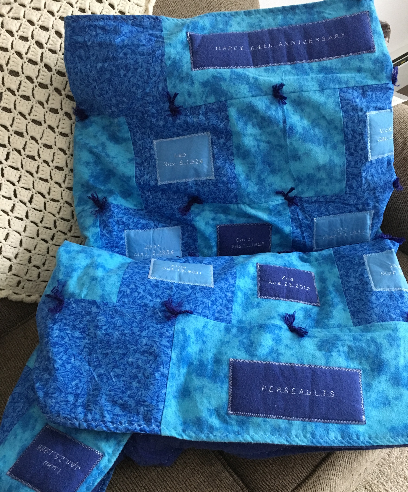

|
My grandparents were celebrating their 64th wedding anniversary. My grandma had been making quilts for us grandkids for as long as I could remember. I am one of 28 grandkids. To celebrate the anniversary, I wanted to make my first quilt for them. I collected the birthdays of all my family members and sewed the names and birthdays of their kids, grandkids and great grandkids into a queen-sized quilt. I was having so much fun and I had some extra time as well, so I wanted to also make a baby quilt for one of my second cousins who had just been born. Little did I know what those 2 quilts would turn into! I have now been in the process of making quilts for all my second cousins, so that they all have the same type of quilts that all of us were given from my grandma when we were kids. So far, I have made 19 more quilts for the kids and 6 for my immediate family members. I only have 3 left to make, and all the cousins will have one! |
 |